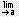
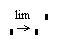
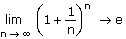
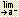
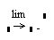
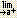
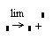

To evaluate the limit of a symbolic expression:
- Press [Ctrl] L to create the limit operator, or click  on the Calculus toolbar.

- Enter the expression for which you want to compute the limit in the placeholder to the right of "lim."
- Enter the limiting variable in the placeholder to the left of the arrow below the "lim."
- Enter the limiting value in the placeholder to the right of the arrow below the "lim."
- Press [Spacebar] until the entire expression is between the editing lines.
- Press [Ctrl] [.] or click the right arrow on the Symbolic toolbar to insert the symbolic equal sign.
- Click outside the expression or press [Enter].
Note: You cannot evaluate limits using the numerical equal = sign.
If the limit does not exist, Mathcad returns an error message.
Example:

Notes:
You can also evaluate one-sided limits symbolically:
- To insert a limit from the left, press [Ctrl] [Shift] B or click  on the Calculus toolbar.

- To insert a limit from the right, press [Ctrl] [Shift] A or click  on the Calculus toolbar.
